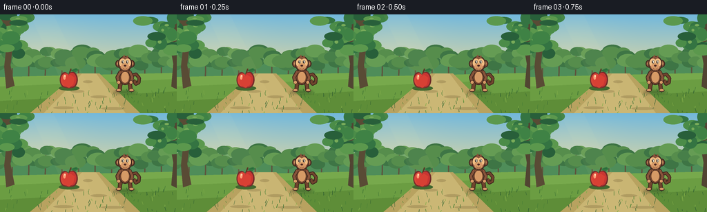
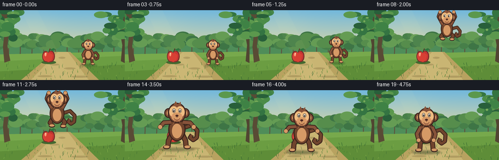

CODING AGENTS AS PIXEL WORLD MODELS
traex/GPT-5.6-Sol · dynamic_spatial_relationship_0059
点击播放 · 原生 RGB 像素
逐轮保存的候选
回放视频、检查图与代码变化。
每份候选均可单独播放。实际图片检查记录在下方工具轨迹中。
候选 01播放与检查图
点击播放 · 原生 RGB 像素


展开代码变化
--- 上一保存版本
+++ 本次保存版本
@@ -0,0 +1,226 @@
+from pathlib import Path
+import math
+import numpy as np
+from PIL import Image, ImageDraw, ImageFilter
+import artifact_io
+
+W, H, N = 256, 144, 20
+SS = 4
+
+def q(v):
+ return int(round(v * SS))
+def box(b):
+ return tuple(q(v) for v in b)
+def pts(p):
+ return [(q(x), q(y)) for x, y in p]
+
+def ellipse(d, b, fill, outline=None, width=1):
+ d.ellipse(box(b), fill=fill, outline=outline, width=q(width) if outline else 1)
+def polygon(d, p, fill):
+ d.polygon(pts(p), fill=fill)
+def line(d, p, fill, width, joint='curve'):
+ d.line(pts(p), fill=fill, width=max(1,q(width)), joint=joint)
+
+def background():
+ hh, ww = H*SS, W*SS
+ y = np.arange(hh)[:,None]/(hh-1)
+ x = np.arange(ww)[None,:]/(ww-1)
+ top = np.array([114,184,220.], float)
+ horizon = np.array([240,220,153.], float)
+ t = np.minimum(y/0.68,1)[...,None]
+ arr = top[None,None,:]*(1-t) + horizon[None,None,:]*t
+ # warm sunlight toward upper left
+ glow = np.exp(-(((x-.23)/.26)**2 + ((y-.31)/.31)**2))[...,None]
+ arr = arr*(1-.16*glow) + np.array([255,239,183])[None,None,:]*(.16*glow)
+ im = Image.fromarray(np.uint8(np.clip(arr,0,255)), 'RGB')
+ d = ImageDraw.Draw(im)
+ # distant hills and orchard rows
+ polygon(d, [(0,70),(24,58),(48,65),(72,52),(96,65),(126,54),(156,64),(190,50),(220,58),(256,46),(256,100),(0,100)], '#75a96d')
+ polygon(d, [(0,79),(34,66),(66,74),(103,61),(144,73),(181,59),(216,70),(256,61),(256,105),(0,105)], '#4f8d59')
+ # distant trunks and canopies
+ rng = np.random.default_rng(21)
+ for xx in range(-8,270,24):
+ line(d, [(xx+2,61),(xx+1,101)], '#5e563d', 2)
+ for k in range(5):
+ cx=xx+rng.uniform(-8,10); cy=rng.uniform(53,75); rr=rng.uniform(9,15)
+ ellipse(d,(cx-rr,cy-rr*.65,cx+rr,cy+rr*.65), rng.choice(['#477f49','#568d4c','#659c54','#3e7545']))
+ # bright grassy ground with perspective bands
+ polygon(d, [(0,91),(256,85),(256,144),(0,144)], '#77a94c')
+ polygon(d, [(0,105),(256,94),(256,144),(0,144)], '#6b9d42')
+ polygon(d, [(0,126),(256,112),(256,144),(0,144)], '#5e8d38')
+ # sunlit path, broadening toward camera
+ polygon(d, [(112,86),(144,86),(203,144),(43,144)], '#b8a260')
+ polygon(d, [(119,86),(139,86),(182,144),(63,144)], '#c9b573')
+ # soft mottled path stones
+ for cx,cy,rx in [(127,98,7),(112,112,10),(143,120,12),(92,136,15),(164,137,18)]:
+ ellipse(d,(cx-rx,cy-2,cx+rx,cy+2),'#b09c61')
+ # foreground tree trunks framing scene
+ polygon(d,[(-2,0),(17,0),(19,41),(15,74),(21,104),(9,108),(6,76),(10,40)],'#594b35')
+ polygon(d,[(246,0),(256,0),(256,109),(248,105),(251,72),(245,39)],'#514532')
+ # foliage clusters, static and detailed
+ for side in [0,1]:
+ rrng=np.random.default_rng(100+side)
+ base=8 if side==0 else 248
+ for k in range(24):
+ cx=base+rrng.normal(0,17); cy=rrng.uniform(-5,58); rx=rrng.uniform(7,15); ry=rrng.uniform(4,10)
+ col=rrng.choice(['#285f3a','#347442','#3f8245','#4b8c48','#5b984d'])
+ ellipse(d,(cx-rx,cy-ry,cx+rx,cy+ry),col)
+ if k%4==0:
+ ellipse(d,(cx-rx*.35,cy-ry*.45,cx+rx*.2,cy+ry*.05),'#77aa59')
+ # foreground grass blades
+ rng=np.random.default_rng(9)
+ for _ in range(90):
+ xx=float(rng.uniform(0,256)); yy=float(rng.uniform(112,145)); length=float(rng.uniform(2,7))
+ col=rng.choice(['#386e32','#4c8136','#82ad48','#315f30'])
+ line(d,[(xx,yy),(xx+rng.uniform(-2,2),yy-length)],col,rng.uniform(.45,.9))
+ return im
+
+BG = background()
+
+def draw_apple(im, t):
+ d=ImageDraw.Draw(im)
+ x, ground = 99.5, 108
+ # anchored shadow
+ ellipse(d,(85,104,115,111),'#42692f')
+ # stem and leaf behind fruit
+ line(d,[(100,87),(103,79)],'#5b3b24',2.1)
+ polygon(d,[(103,81),(110,78),(114,81),(108,85)],'#347941')
+ line(d,[(103,82),(111,80)],'#1e5c33',.7)
+ # apple silhouette: overlapping lobes with dark contour
+ ellipse(d,(86.5,84,100.8,106.5),'#752d2b')
+ ellipse(d,(97.5,83.5,112.5,106.7),'#752d2b')
+ polygon(d,[(88,92),(91,104),(99.5,108),(108.5,104),(111,92),(104,87),(99.5,89),(95,87)],'#8b302e')
+ ellipse(d,(88,86,101.5,105),'#d94739')
+ ellipse(d,(97.5,85,110.5,105),'#c93632')
+ polygon(d,[(90,96),(93,104),(100,107),(106,102),(108,92),(102,88),(98,91),(94,88)],'#d84034')
+ ellipse(d,(91.5,88,95,95),'#ff9e78')
+ ellipse(d,(93,88,95,91),'#ffd6ad')
+ # little ground-contact dark line
+ line(d,[(95,107),(104,107)],'#71402b',1)
+
+def monkey_pose(i):
+ # x, foot y, scale, airborne amount, crouch, landing
+ key = [
+ (0,181,112,.66,0,0,0),(3,181,112,.66,0,0,0),
+ (4,181,115,.67,0,.9,0),(5,178,108,.70,.25,.35,0),
+ (6,170,91,.75,.65,0,0),(7,160,76,.81,.95,0,0),
+ (8,149,65,.87,1,0,0),(9,138,59,.93,1,0,0),
+ (10,127,58,1.00,1,0,0),(11,117,64,1.06,1,0,0),
+ (12,110,76,1.12,.9,0,0),(13,107,94,1.18,.65,0,0),
+ (14,107,120,1.23,.15,.25,.65),(15,107,127,1.18,0,.55,1),
+ (16,107,126,1.16,0,.2,.55),(17,107,126,1.15,0,0,.15),(19,107,126,1.15,0,0,0)]
+ for a,b in zip(key,key[1:]):
+ if a[0] <= i <= b[0]:
+ u=(i-a[0])/max(1,b[0]-a[0]); u=u*u*(3-2*u)
+ vals=[a[j]*(1-u)+b[j]*u for j in range(1,7)]
+ return vals
+ return list(key[-1][1:])
+
+def draw_monkey(im, i, shadow_layer=True):
+ x, fy, s, air, crouch, landing = monkey_pose(i)
+ d=ImageDraw.Draw(im)
+ # depth/contact shadow; fades and tightens while airborne
+ shadow_alpha = max(.18, 1-air*.72)
+ shw=(26*s*(1+landing*.2)); shh=5*s*(1-air*.3)
+ shadow=Image.new('RGBA',im.size,(0,0,0,0)); sd=ImageDraw.Draw(shadow)
+ sd.ellipse(box((x-shw, fy-shh*.25, x+shw, fy+shh)), fill=(27,48,26,int(105*shadow_alpha)))
+ shadow=shadow.filter(ImageFilter.GaussianBlur(q(1.7)))
+ im.paste(shadow,(0,0),shadow)
+ d=ImageDraw.Draw(im)
+ def P(px,py): return (x+px*s, fy+py*s)
+ def E(cx,cy,rx,ry,fill,outline=None,w=1):
+ ellipse(d,(x+(cx-rx)*s,fy+(cy-ry)*s,x+(cx+rx)*s,fy+(cy+ry)*s),fill,outline,max(.5,w*s))
+ def L(coords,fill,w): line(d,[P(a,b) for a,b in coords],fill,w*s)
+ dark='#3b241d'; fur='#70442d'; fur2='#87533a'; tan='#d69a66'; cream='#efbd82'; ink='#2d201d'
+ # tail behind body: expressive curled silhouette
+ if i < 11:
+ tail=[(9,-34),(24,-38),(31,-29),(30,-19),(24,-16),(21,-21),(24,-25)]
+ else:
+ tail=[(9,-34),(25,-39),(34,-30),(33,-18),(27,-14),(22,-18),(25,-23)]
+ L(tail,dark,7.5); L(tail,fur,4.5)
+ # legs: in flight tuck knees up; landing spreads feet
+ if air>.35:
+ leftleg=[(-7,-27),(-14,-16),(-8,-10)]
+ rightleg=[(7,-27),(15,-17),(10,-9)]
+ else:
+ spread=2+landing*5
+ leftleg=[(-7,-27),(-9-spread,-13),(-10-spread,-2)]
+ rightleg=[(7,-27),(9+spread,-13),(10+spread,-2)]
+ for leg in (leftleg,rightleg):
+ L(leg,dark,9); L(leg,fur,6)
+ # feet
+ E(leftleg[-1][0]-2,leftleg[-1][1],6,3.3,dark); E(leftleg[-1][0]-2,leftleg[-1][1]-.7,4.8,2.2,tan)
+ E(rightleg[-1][0]+2,rightleg[-1][1],6,3.3,dark); E(rightleg[-1][0]+2,rightleg[-1][1]-.7,4.8,2.2,tan)
+ # torso outline and body
+ body_cy=-34+crouch*2+landing*2
+ E(0,body_cy,14.5,20,dark)
+ E(0,body_cy,12.4,18.2,fur)
+ E(0,body_cy+3,8.3,12.2,tan)
+ ellipse(d,box((x-4*s,fy+(body_cy-8)*s,x+4*s,fy+(body_cy+10)*s)),'#dfa36f')
+ # arms: raised dramatically in mid-jump, then out for balance on landing
+ if air>.45:
+ lift=min(1,(air-.45)/.4)
+ la=[(-10,-44),(-20,-53-10*lift),(-16,-64-10*lift)]
+ ra=[(10,-44),(20,-53-10*lift),(16,-64-10*lift)]
+ elif landing>.1:
+ la=[(-10,-44),(-22,-43),(-28,-36)]
+ ra=[(10,-44),(22,-43),(28,-36)]
+ else:
+ la=[(-10,-44),(-17,-31),(-14,-20)]
+ ra=[(10,-44),(16,-31),(13,-20)]
+ for arm in (la,ra):
+ L(arm,dark,8); L(arm,fur2,5.2)
+ E(arm[-1][0],arm[-1][1],4,4,tan, dark, .7)
+ # neck
+ E(0,-52+crouch*3,9,9,fur)
+ # ears and head (front-facing; eyes glance left initially)
+ hy=-61+crouch*4+landing*1
+ E(-14,hy,7.2,8.2,dark); E(14,hy,7.2,8.2,dark)
+ E(-14,hy,5.4,6.4,fur2); E(14,hy,5.4,6.4,fur2)
+ E(-14,hy,2.9,3.6,tan); E(14,hy,2.9,3.6,tan)
+ E(0,hy,15,17,dark)
+ E(0,hy,13.2,15.2,fur2)
+ # tuft
+ polygon(d,[P(-6,hy-13),P(-2,hy-20),P(1,hy-14),P(6,hy-19),P(7,hy-11)],fur2)
+ # two-part face mask and muzzle
+ E(-5.3,hy-2,7.5,9.3,cream)
+ E(5.3,hy-2,7.5,9.3,cream)
+ E(0,hy+6.3,9.2,7.2,tan)
+ # eyes
+ E(-5,hy-4,2.7,3.6,'#fff7df',ink,.7)
+ E(5,hy-4,2.7,3.6,'#fff7df',ink,.7)
+ glance = -1.0*(1-min(1,max(0,(i-7)/8)))
+ E(-5+glance,hy-3.5,1.3,1.8,ink)
+ E(5+glance,hy-3.5,1.3,1.8,ink)
+ E(-5.5+glance,hy-4.1,.35,.5,'white'); E(4.5+glance,hy-4.1,.35,.5,'white')
+ # nose and happy mouth
+ E(0,hy+4.5,2.5,1.7,'#4b2923')
+ L([(0,hy+5.5),(0,hy+8)],'#63352a',.8)
+ # mouth arc drawn in local coordinates
+ d.arc(box((x-5*s,fy+(hy+5)*s,x+5*s,fy+(hy+12)*s)),5,175,fill='#6b3028',width=max(1,q(.9*s)))
+ # blush / facial highlight
+ E(-7.5,hy+4.5,1.5,.7,'#e99876'); E(7.5,hy+4.5,1.5,.7,'#e99876')
+ # fur highlights
+ d.arc(box((x-8*s,fy+(body_cy-15)*s,x+8*s,fy+(body_cy+12)*s)),205,318,fill='#a66c49',width=max(1,q(.8*s)))
+
+
+def render_frame(i):
+ im=BG.copy()
+ # atmospheric light rays, very subtle
+ overlay=Image.new('RGBA',im.size,(0,0,0,0)); od=ImageDraw.Draw(overlay)
+ od.polygon(pts([(43,0),(77,0),(147,144),(111,144)]),fill=(255,242,177,10))
+ im=Image.alpha_composite(im.convert('RGBA'),overlay).convert('RGB')
+ draw_apple(im,i)
+ draw_monkey(im,i)
+ # foreground flecks help sell final depth, drawn in front of feet only
+ d=ImageDraw.Draw(im)
+ rng=np.random.default_rng(400+i)
+ if i in (14,15):
+ for k in range(10):
+ xx=107+rng.normal(0,20); yy=125+rng.uniform(-3,7)
+ line(d,[(xx,yy),(xx+rng.uniform(-2,2),yy-rng.uniform(1,4))],'#9fbd5b',.7)
+ return np.asarray(im.resize((W,H),Image.Resampling.LANCZOS),dtype=np.uint8)
+
+frames=np.stack([render_frame(i) for i in range(N)],axis=0)
+assert frames.shape==(20,144,256,3) and frames.dtype==np.uint8
+artifact_io.save(frames,Path(__file__).resolve().parent)
候选 02播放与检查图
点击播放 · 原生 RGB 像素

展开代码变化
--- 上一保存版本
+++ 本次保存版本
@@ -104,9 +104,9 @@
(0,181,112,.66,0,0,0),(3,181,112,.66,0,0,0),
(4,181,115,.67,0,.9,0),(5,178,108,.70,.25,.35,0),
(6,170,91,.75,.65,0,0),(7,160,76,.81,.95,0,0),
- (8,149,65,.87,1,0,0),(9,138,59,.93,1,0,0),
- (10,127,58,1.00,1,0,0),(11,117,64,1.06,1,0,0),
- (12,110,76,1.12,.9,0,0),(13,107,94,1.18,.65,0,0),
+ (8,149,68,.87,1,0,0),(9,138,74,.93,1,0,0),
+ (10,127,79,1.00,1,0,0),(11,117,84,1.06,1,0,0),
+ (12,110,90,1.12,.9,0,0),(13,107,101,1.18,.65,0,0),
(14,107,120,1.23,.15,.25,.65),(15,107,127,1.18,0,.55,1),
(16,107,126,1.16,0,.2,.55),(17,107,126,1.15,0,0,.15),(19,107,126,1.15,0,0,0)]
for a,b in zip(key,key[1:]):
可观测工具轨迹
实际执行的命令与返回图片。
命令 1exit 0
/bin/bash -lc "cat prompt.txt && printf '\\n---RULES---\\n' && cat GENERATION_RULES.md && printf '\\n---SPEC---\\n' && cat task_spec.json"
命令 2exit 0
/bin/bash -lc "find . -maxdepth 2 -type f -printf '%p %s bytes\\n' | sort"
命令 3exit 0
/bin/bash -lc "sed -n '1,240p' artifact_io.py"
命令 4exit 0
/bin/bash -lc "cat > generate.py <<'PY'
from pathlib import Path
import math
import numpy as np
from PIL import Image, ImageDraw, ImageFilter
import artifact_io
W, H, N = 256, 144, 20
SS = 4
def q(v):
return int(round(v * SS))
def box(b):
return tuple(q(v) for v in b)
def pts(p):
return [(q(x), q(y)) for x, y in p]
def ellipse(d, b, fill, outline=None, width=1):
d.ellipse(box(b), fill=fill, outline=outline, width=q(width) if outline else 1)
def polygon(d, p, fill):
d.polygon(pts(p), fill=fill)
def line(d, p, fill, width, joint='curve'):
d.line(pts(p), fill=fill, width=max(1,q(width)), joint=joint)
def background():
hh, ww = H*SS, W*SS
y = np.arange(hh)[:,None]/(hh-1)
x = np.arange(ww)[None,:]/(ww-1)
top = np.array([114,184,220.], float)
horizon = np.array([240,220,153.], float)
t = np.minimum(y/0.68,1)[...,None]
arr = top[None,None,:]*(1-t) + horizon[None,None,:]*t
# warm sunlight toward upper left
glow = np.exp(-(((x-.23)/.26)**2 + ((y-.31)/.31)**2))[...,None]
arr = arr*(1-.16*glow) + np.array([255,239,183])[None,None,:]*(.16*glow)
im = Image.fromarray(np.uint8(np.clip(arr,0,255)), 'RGB')
d = ImageDraw.Draw(im)
# distant hills and orchard rows
polygon(d, [(0,70),(24,58),(48,65),(72,52),(96,65),(126,54),(156,64),(190,50),(220,58),(256,46),(256,100),(0,100)], '#75a96d')
polygon(d, [(0,79),(34,66),(66,74),(103,61),(144,73),(181,59),(216,70),(256,61),(256,105),(0,105)], '#4f8d59')
# distant trunks and canopies
rng = np.random.default_rng(21)
for xx in range(-8,270,24):
line(d, [(xx+2,61),(xx+1,101)], '#5e563d', 2)
for k in range(5):
cx=xx+rng.uniform(-8,10); cy=rng.uniform(53,75); rr=rng.uniform(9,15)
ellipse(d,(cx-rr,cy-rr*.65,cx+rr,cy+rr*.65), rng.choice(['#477f49','#568d4c','#659c54','#3e7545']))
# bright grassy ground with perspective bands
polygon(d, [(0,91),(256,85),(256,144),(0,144)], '#77a94c')
polygon(d, [(0,105),(256,94),(256,144),(0,144)], '#6b9d42')
polygon(d, [(0,126),(256,112),(256,144),(0,144)], '#5e8d38')
# sunlit path, broadening toward camera
polygon(d, [(112,86),(144,86),(203,144),(43,144)], '#b8a260')
polygon(d, [(119,86),(139,86),(182,144),(63,144)], '#c9b573')
# soft mottled path stones
for cx,cy,rx in [(127,98,7),(112,112,10),(143,120,12),(92,136,15),(164,137,18)]:
ellipse(d,(cx-rx,cy-2,cx+rx,cy+2),'#b09c61')
# foreground tree trunks framing scene
polygon(d,[(-2,0),(17,0),(19,41),(15,74),(21,104),(9,108),(6,76),(10,40)],'#594b35')
polygon(d,[(246,0),(256,0),(256,109),(248,105),(251,72),(245,39)],'#514532')
# foliage clusters, static and detailed
for side in [0,1]:
rrng=np.random.default_rng(100+side)
base=8 if side==0 else 248
for k in range(24):
cx=base+rrng.normal(0,17); cy=rrng.uniform(-5,58); rx=rrng.uniform(7,15); ry=rrng.uniform(4,10)
col=rrng.choice(['#285f3a','#347442','#3f8245','#4b8c48','#5b984d'])
ellipse(d,(cx-rx,cy-ry,cx+rx,cy+ry),col)
if k%4==0:
ellipse(d,(cx-rx*.35,cy-ry*.45,cx+rx*.2,cy+ry*.05),'#77aa59')
# foreground grass blades
rng=np.random.default_rng(9)
for _ in range(90):
xx=float(rng.uniform(0,256)); yy=float(rng.uniform(112,145)); length=float(rng.uniform(2,7))
col=rng.choice(['#386e32','#4c8136','#82ad48','#315f30'])
line(d,[(xx,yy),(xx+rng.uniform(-2,2),yy-length)],col,rng.uniform(.45,.9))
return im
BG = background()
def draw_apple(im, t):
d=ImageDraw.Draw(im)
x, ground = 99.5, 108
# anchored shadow
ellipse(d,(85,104,115,111),'#42692f')
# stem and leaf behind fruit
line(d,[(100,87),(103,79)],'#5b3b24',2.1)
polygon(d,[(103,81),(110,78),(114,81),(108,85)],'#347941')
line(d,[(103,82),(111,80)],'#1e5c33',.7)
# apple silhouette: overlapping lobes with dark contour
ellipse(d,(86.5,84,100.8,106.5),'#752d2b')
ellipse(d,(97.5,83.5,112.5,106.7),'#752d2b')
polygon(d,[(88,92),(91,104),(99.5,108),(108.5,104),(111,92),(104,87),(99.5,89),(95,87)],'#8b302e')
ellipse(d,(88,86,101.5,105),'#d94739')
ellipse(d,(97.5,85,110.5,105),'#c93632')
polygon(d,[(90,96),(93,104),(100,107),(106,102),(108,92),(102,88),(98,91),(94,88)],'#d84034')
ellipse(d,(91.5,88,95,95),'#ff9e78')
ellipse(d,(93,88,95,91),'#ffd6ad')
# little ground-contact dark line
line(d,[(95,107),(104,107)],'#71402b',1)
def monkey_pose(i):
# x, foot y, scale, airborne amount, crouch, landing
key = [
(0,181,112,.66,0,0,0),(3,181,112,.66,0,0,0),
(4,181,115,.67,0,.9,0),(5,178,108,.70,.25,.35,0),
(6,170,91,.75,.65,0,0),(7,160,76,.81,.95,0,0),
(8,149,65,.87,1,0,0),(9,138,59,.93,1,0,0),
(10,127,58,1.00,1,0,0),(11,117,64,1.06,1,0,0),
(12,110,76,1.12,.9,0,0),(13,107,94,1.18,.65,0,0),
(14,107,120,1.23,.15,.25,.65),(15,107,127,1.18,0,.55,1),
(16,107,126,1.16,0,.2,.55),(17,107,126,1.15,0,0,.15),(19,107,126,1.15,0,0,0)]
for a,b in zip(key,key[1:]):
if a[0] <= i <= b[0]:
u=(i-a[0])/max(1,b[0]-a[0]); u=u*u*(3-2*u)
vals=[a[j]*(1-u)+b[j]*u for j in range(1,7)]
return vals
return list(key[-1][1:])
def draw_monkey(im, i, shadow_layer=True):
x, fy, s, air, crouch, landing = monkey_pose(i)
d=ImageDraw.Draw(im)
# depth/contact shadow; fades and tightens while airborne
shadow_alpha = max(.18, 1-air*.72)
shw=(26*s*(1+landing*.2)); shh=5*s*(1-air*.3)
shadow=Image.new('RGBA',im.size,(0,0,0,0)); sd=ImageDraw.Draw(shadow)
sd.ellipse(box((x-shw, fy-shh*.25, x+shw, fy+shh)), fill=(27,48,26,int(105*shadow_alpha)))
shadow=shadow.filter(ImageFilter.GaussianBlur(q(1.7)))
im.paste(shadow,(0,0),shadow)
d=ImageDraw.Draw(im)
def P(px,py): return (x+px*s, fy+py*s)
def E(cx,cy,rx,ry,fill,outline=None,w=1):
ellipse(d,(x+(cx-rx)*s,fy+(cy-ry)*s,x+(cx+rx)*s,fy+(cy+ry)*s),fill,outline,max(.5,w*s))
def L(coords,fill,w): line(d,[P(a,b) for a,b in coords],fill,w*s)
dark='#3b241d'; fur='#70442d'; fur2='#87533a'; tan='#d69a66'; cream='#efbd82'; ink='#2d201d'
# tail behind body: expressive curled silhouette
if i < 11:
tail=[(9,-34),(24,-38),(31,-29),(30,-19),(24,-16),(21,-21),(24,-25)]
else:
tail=[(9,-34),(25,-39),(34,-30),(33,-18),(27,-14),(22,-18),(25,-23)]
L(tail,dark,7.5); L(tail,fur,4.5)
# legs: in flight tuck knees up; landing spreads feet
if air>.35:
leftleg=[(-7,-27),(-14,-16),(-8,-10)]
rightleg=[(7,-27),(15,-17),(10,-9)]
else:
spread=2+landing*5
leftleg=[(-7,-27),(-9-spread,-13),(-10-spread,-2)]
rightleg=[(7,-27),(9+spread,-13),(10+spread,-2)]
for leg in (leftleg,rightleg):
L(leg,dark,9); L(leg,fur,6)
# feet
E(leftleg[-1][0]-2,leftleg[-1][1],6,3.3,dark); E(leftleg[-1][0]-2,leftleg[-1][1]-.7,4.8,2.2,tan)
E(rightleg[-1][0]+2,rightleg[-1][1],6,3.3,dark); E(rightleg[-1][0]+2,rightleg[-1][1]-.7,4.8,2.2,tan)
# torso outline and body
body_cy=-34+crouch*2+landing*2
E(0,body_cy,14.5,20,dark)
E(0,body_cy,12.4,18.2,fur)
E(0,body_cy+3,8.3,12.2,tan)
ellipse(d,box((x-4*s,fy+(body_cy-8)*s,x+4*s,fy+(body_cy+10)*s)),'#dfa36f')
# arms: raised dramatically in mid-jump, then out for balance on landing
if air>.45:
lift=min(1,(air-.45)/.4)
la=[(-10,-44),(-20,-53-10*lift),(-16,-64-10*lift)]
ra=[(10,-44),(20,-53-10*lift),(16,-64-10*lift)]
elif landing>.1:
la=[(-10,-44),(-22,-43),(-28,-36)]
ra=[(10,-44),(22,-43),(28,-36)]
else:
la=[(-10,-44),(-17,-31),(-14,-20)]
ra=[(10,-44),(16,-31),(13,-20)]
for arm in (la,ra):
L(arm,dark,8); L(arm,fur2,5.2)
E(arm[-1][0],arm[-1][1],4,4,tan, dark, .7)
# neck
E(0,-52+crouch*3,9,9,fur)
# ears and head (front-facing; eyes glance left initially)
hy=-61+crouch*4+landing*1
E(-14,hy,7.2,8.2,dark); E(14,hy,7.2,8.2,dark)
E(-14,hy,5.4,6.4,fur2); E(14,hy,5.4,6.4,fur2)
E(-14,hy,2.9,3.6,tan); E(14,hy,2.9,3.6,tan)
E(0,hy,15,17,dark)
E(0,hy,13.2,15.2,fur2)
# tuft
polygon(d,[P(-6,hy-13),P(-2,hy-20),P(1,hy-14),P(6,hy-19),P(7,hy-11)],fur2)
# two-part face mask and muzzle
E(-5.3,hy-2,7.5,9.3,cream)
E(5.3,hy-2,7.5,9.3,cream)
E(0,hy+6.3,9.2,7.2,tan)
# eyes
E(-5,hy-4,2.7,3.6,'#fff7df',ink,.7)
E(5,hy-4,2.7,3.6,'#fff7df',ink,.7)
glance = -1.0*(1-min(1,max(0,(i-7)/8)))
E(-5+glance,hy-3.5,1.3,1.8,ink)
E(5+glance,hy-3.5,1.3,1.8,ink)
E(-5.5+glance,hy-4.1,.35,.5,'white'); E(4.5+glance,hy-4.1,.35,.5,'white')
# nose and happy mouth
E(0,hy+4.5,2.5,1.7,'#4b2923')
L([(0,hy+5.5),(0,hy+8)],'#63352a',.8)
# mouth arc drawn in local coordinates
d.arc(box((x-5*s,fy+(hy+5)*s,x+5*s,fy+(hy+12)*s)),5,175,fill='#6b3028',width=max(1,q(.9*s)))
# blush / facial highlight
E(-7.5,hy+4.5,1.5,.7,'#e99876'); E(7.5,hy+4.5,1.5,.7,'#e99876')
# fur highlights
d.arc(box((x-8*s,fy+(body_cy-15)*s,x+8*s,fy+(body_cy+12)*s)),205,318,fill='#a66c49',width=max(1,q(.8*s)))
def render_frame(i):
im=BG.copy()
# atmospheric light rays, very subtle
overlay=Image.new('RGBA',im.size,(0,0,0,0)); od=ImageDraw.Draw(overlay)
od.polygon(pts([(43,0),(77,0),(147,144),(111,144)]),fill=(255,242,177,10))
im=Image.alpha_composite(im.convert('RGBA'),overlay).convert('RGB')
draw_apple(im,i)
draw_monkey(im,i)
# foreground flecks help sell final depth, drawn in front of feet only
d=ImageDraw.Draw(im)
rng=np.random.default_rng(400+i)
if i in (14,15):
for k in range(10):
xx=107+rng.normal(0,20); yy=125+rng.uniform(-3,7)
line(d,[(xx,yy),(xx+rng.uniform(-2,2),yy-rng.uniform(1,4))],'#9fbd5b',.7)
return np.asarray(im.resize((W,H),Image.Resampling.LANCZOS),dtype=np.uint8)
frames=np.stack([render_frame(i) for i in range(N)],axis=0)
assert frames.shape==(20,144,256,3) and frames.dtype==np.uint8
artifact_io.save(frames,Path(__file__).resolve().parent)
PY
python generate.py
python - <<'PY'
from PIL import Image
im=Image.open('inspection.png'); print(im.size, im.mode)
import numpy as np
z=np.load('pixels.npz')['pixels']; print(z.shape,z.dtype)
PY"命令 5exit 0
/bin/bash -lc "python - <<'PY' p='generate.py' s=open(p).read() s=s.replace(\"(8,149,65,.87,1,0,0),(9,138,59,.93,1,0,0),\\n (10,127,58,1.00,1,0,0),(11,117,64,1.06,1,0,0),\\n (12,110,76,1.12,.9,0,0),(13,107,94,1.18,.65,0,0),\", \"(8,149,68,.87,1,0,0),(9,138,74,.93,1,0,0),\\n (10,127,79,1.00,1,0,0),(11,117,84,1.06,1,0,0),\\n (12,110,90,1.12,.9,0,0),(13,107,101,1.18,.65,0,0),\") open(p,'w').write(s) PY python generate.py"
命令 6exit 0
/bin/bash -lc "python - <<'PY'
from pathlib import Path
import numpy as np
from PIL import Image
p=Path('.')
fs=sorted((p/'frames').glob('*.png'))
assert len(fs)==20
for f in fs:
a=np.asarray(Image.open(f))
assert a.shape==(144,256,3) and a.dtype==np.uint8
z=np.load('pixels.npz')['pixels']
assert z.shape==(144,256,20) and z.dtype==np.uint32
# temporal change statistics
rgb=np.stack([np.asarray(Image.open(f)) for f in fs])
changed=np.mean(np.any(rgb[1:] "'!= rgb[:-1],axis=-1),axis=(1,2))
print('"'frames validated:',len(fs),'mean temporal changed fraction:',round(float(changed.mean()),4))
print('deliverables:', ', '.join(x.name for x in [p/'generate.py',p/'pixels.npz',p/'index.html',p/'inspection.png']))
PY"视觉工具实际返回图片 1
视觉工具实际返回图片 2

保存候选 2 份；完成命令 6 次；可验证图片返回 2 张。原始 API 响应与完整日志保留在本地。